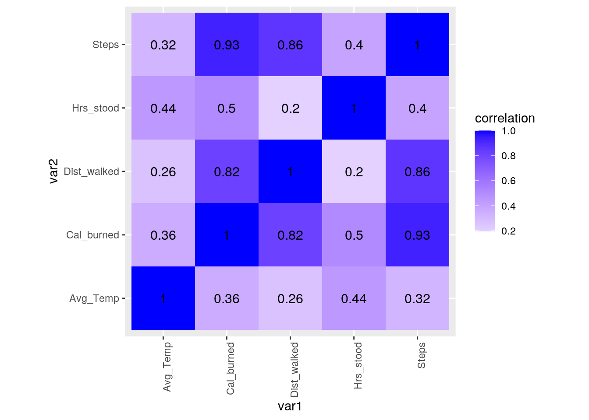
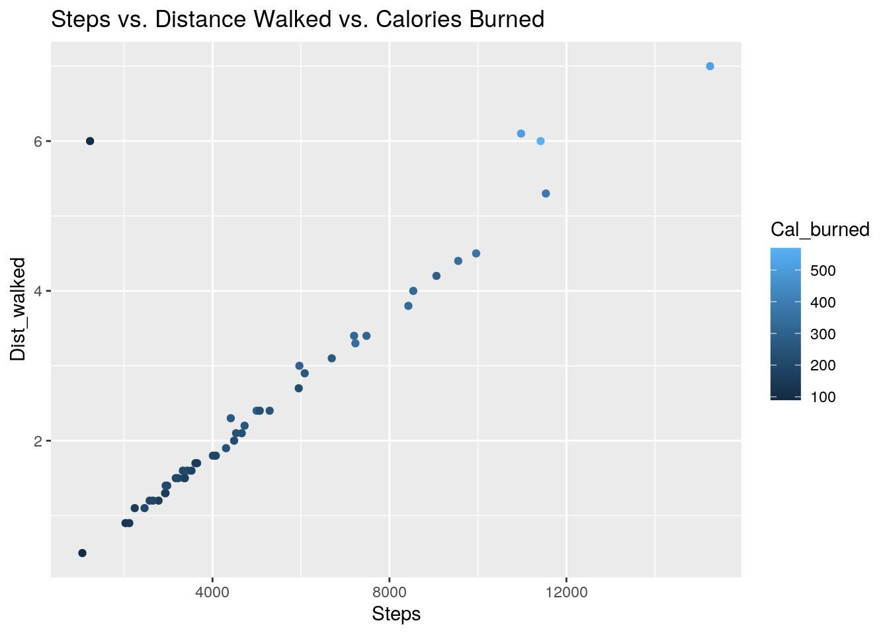
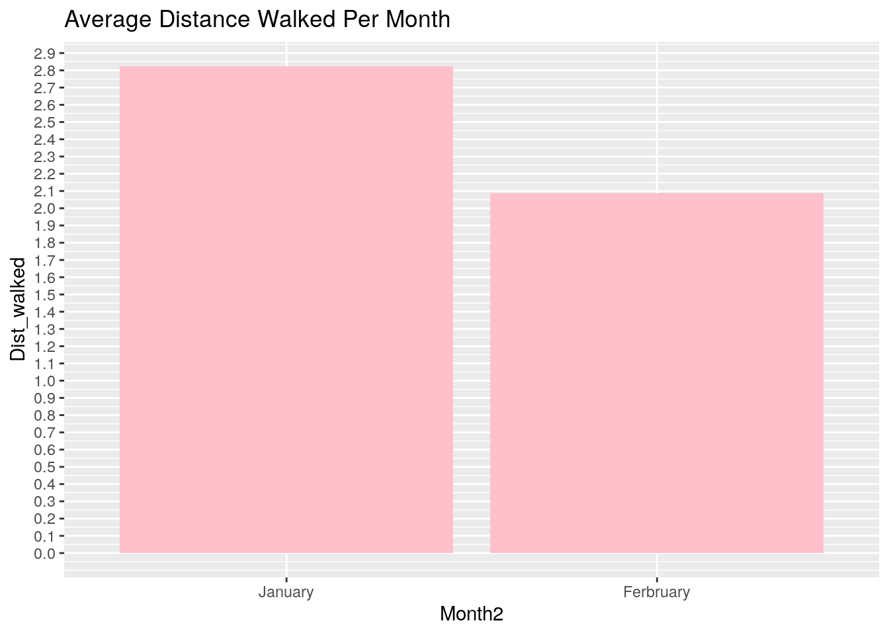
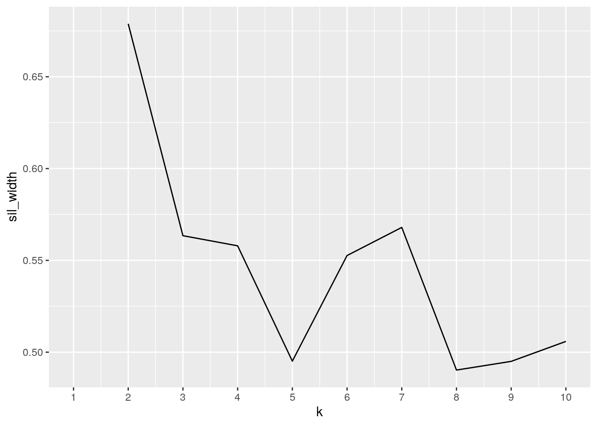
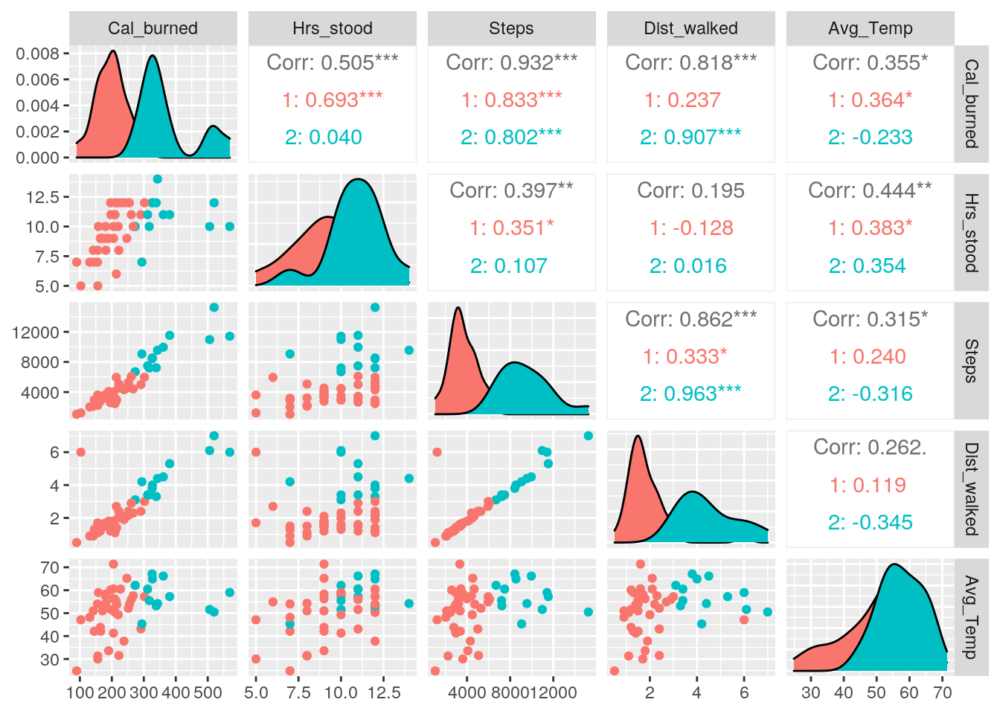
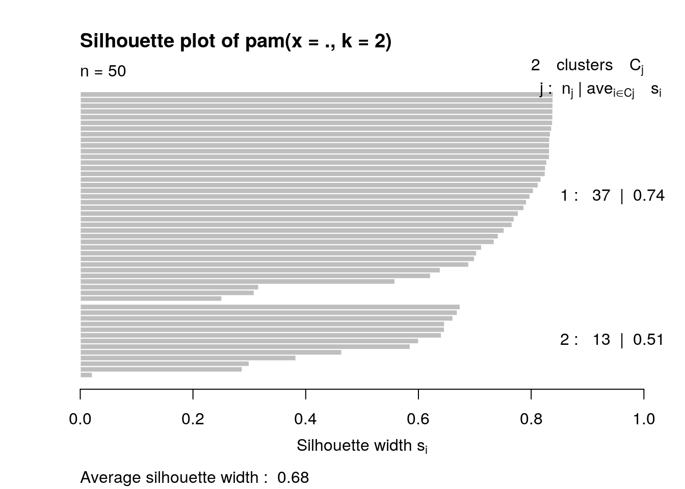

library(tidyverse)## ── Attaching packages ─────────────────────────────────────── tidyverse 1.3.0 ──## ✓ ggplot2 3.3.3 ✓ purrr 0.3.4
## ✓ tibble 3.0.4 ✓ dplyr 1.0.2
## ✓ tidyr 1.1.2 ✓ stringr 1.4.0
## ✓ readr 1.4.0 ✓ forcats 0.5.0## ── Conflicts ────────────────────────────────────────── tidyverse_conflicts() ──
## x dplyr::filter() masks stats::filter()
## x dplyr::lag() masks stats::lag()Apple_Watch_Data <- read.csv("Apple_Watch_Data.csv")
Weather_Data <- read.csv("Weather_Data.csv")Joined_Fitness_Data <- Apple_Watch_Data %>% left_join(Weather_Data, by="Date")The type of join that was performed was a left join. There were 50 observations in each dataset and 50 observations after joining. There were no observations that were dropped because for each day that the watch recorded the fitness data, there was weather data for that day available. This particular join was used because I wanted to add on the weather data for the days that the watch recorded fitness activity. So, it was easiest to do a left join in order to add that information by the corresponding date since they shared that variable in common.
Using the filter function, I filtered the dataset so that it only showed the data for when the number of steps was greater than or equal to 10,000. I did this in order to see on how many of the 50 days I met my 10,000 step goal. The results of this showed that I only met my goal on 4/50 days.
#Filter function
Joined_Fitness_Data %>% filter(Steps >= 10000)## Date Cal_burned Hrs_stood Steps Dist_walked Avg_Temp
## 1 1/3/21 506 10 10975 6.1 51.6
## 2 1/5/21 569 10 11417 6.0 59.0
## 3 1/7/21 520 12 15247 7.0 50.5
## 4 1/21/21 381 11 11536 5.3 57.2Using the select function, I selected only the date, calories burned, and distance walked columns. Then I arranged the dataset by distance walked. I did this in order to see if walking a greater distance burned more calories. The results of this showed that there is a positive relationship between distance walked and calories burned, however it is not perfect because on some days I walked a shorter distance but burned more calories.
#Select function
Joined_Fitness_Data %>% select(Date, Cal_burned, Dist_walked) %>% arrange(Dist_walked) %>% head()## Date Cal_burned Dist_walked
## 1 2/14/21 90 0.5
## 2 1/16/21 131 0.9
## 3 1/20/21 142 0.9
## 4 1/15/21 210 1.1
## 5 2/12/21 156 1.1
## 6 1/19/21 196 1.2Using the arrange function, I arranged my data from lowest temperature to highest temperature to see if colder weather had an effect on fitness activity. This shows that typically, although not always the case, the temperature seems to be higher on days that I burned more calories.
#Arrange function
Joined_Fitness_Data %>% arrange(Avg_Temp) %>% head()## Date Cal_burned Hrs_stood Steps Dist_walked Avg_Temp
## 1 2/14/21 90 7 1058 0.5 24.8
## 2 2/13/21 156 5 3614 1.7 30.0
## 3 2/12/21 156 8 2242 1.1 31.3
## 4 2/19/21 222 8 5068 2.4 31.5
## 5 2/11/21 190 9 4074 1.8 33.6
## 6 1/12/21 238 12 4306 1.9 37.8Using the group_by function, I grouped my data by Month. In order to do that, I first had to separate the month variable into “month”, “day” and, “year”. After that I made a new column called “month2” in which I recoded the month column so that “1” was equal to “January” and “2” was equal to “February”. After that I grouped the data by Month2.
#group_by function
Joined_Fitness_Data %>% separate(Date,into=c("Month", "Day", "Year")) %>%
mutate(Month2 = recode_factor(Month, `1`="January", `2`="Ferbruary")) %>%
group_by(Month2)## # A tibble: 50 x 9
## # Groups: Month2 [2]
## Month Day Year Cal_burned Hrs_stood Steps Dist_walked Avg_Temp Month2
## <chr> <chr> <chr> <int> <int> <int> <dbl> <dbl> <fct>
## 1 1 1 21 145 7 2937 1.3 42.1 January
## 2 1 2 21 103 5 1232 6 47.1 January
## 3 1 3 21 506 10 10975 6.1 51.6 January
## 4 1 4 21 343 14 9554 4.4 54.2 January
## 5 1 5 21 569 10 11417 6 59 January
## 6 1 6 21 273 10 6696 3.1 62.1 January
## 7 1 7 21 520 12 15247 7 50.5 January
## 8 1 8 21 291 11 4997 2.4 43.1 January
## 9 1 9 21 165 9 3375 1.5 42.1 January
## 10 1 12 21 238 12 4306 1.9 37.8 January
## # … with 40 more rowsUsing the mutate function, I created a new column that converted the average temperature from degrees Celsius to degrees Fahrenheit.
#Mutate funtion
Joined_Fitness_Data %>% mutate(Avg_temp_celcius = (Avg_Temp - 32)*(5/9)) %>% head()## Date Cal_burned Hrs_stood Steps Dist_walked Avg_Temp Avg_temp_celcius
## 1 1/1/21 145 7 2937 1.3 42.1 5.611111
## 2 1/2/21 103 5 1232 6.0 47.1 8.388889
## 3 1/3/21 506 10 10975 6.1 51.6 10.888889
## 4 1/4/21 343 14 9554 4.4 54.2 12.333333
## 5 1/5/21 569 10 11417 6.0 59.0 15.000000
## 6 1/6/21 273 10 6696 3.1 62.1 16.722222Using the summarize function, I first grouped the data by month and then computed the mean for calories burned, hours stood, steps taken, distance walked, and averge temperature for each month.
#Summarize function
Joined_Fitness_Data %>% separate(Date,into=c("Month", "Day", "Year")) %>%
mutate(Month2 = recode_factor(Month, `1`="January", `2`="Ferbruary")) %>%
group_by(Month2) %>%
summarize(mean_cal_burn=mean(Cal_burned,na.rm=T),mean_hrs_stood=mean(Hrs_stood,na.rm=T), mean_steps=mean(Steps,na.rm=T), mean_dist_walk=mean(Dist_walked,na.rm=T), mean_avg_temp=mean(Avg_Temp,na.rm=T))## `summarise()` ungrouping output (override with `.groups` argument)## # A tibble: 2 x 6
## Month2 mean_cal_burn mean_hrs_stood mean_steps mean_dist_walk mean_avg_temp
## <fct> <dbl> <dbl> <dbl> <dbl> <dbl>
## 1 January 259. 10.0 5616. 2.82 53.4
## 2 Ferbruary 222. 9.52 4468. 2.09 49.9#Summary statistics for overall data
Joined_Fitness_Data %>%
summarize(mean_cal.burn=mean(Cal_burned, na.rm=T),
sd_cal.burn=sd(Cal_burned, na.rm=T),
min_cal.burn=min(Cal_burned),
max_cal.burn=max(Cal_burned),
var_cal.burn=var(Cal_burned, na.rm=T),
mean_hrs.stood=mean(Hrs_stood, na.rm=T),
sd_hrs.stood=sd(Hrs_stood, na.rm=T),
min_hrs.stood=min(Hrs_stood),
max_hrs.stood=max(Hrs_stood),
var_hrs.stood=var(Hrs_stood, na.rm=T),
mean_steps=mean(Steps, na.rm=T),
sd_steps=sd(Steps, na.rm=T),
min_steps=min(Steps),
max_steps=max(Steps),
var_steps=var(Steps, na.rm=T),
mean_dist.walked=mean(Dist_walked, na.rm=T),
sd_dist.walked=sd(Dist_walked, na.rm=T),
min_dist.walked=min(Dist_walked),
max_dist.walked=max(Dist_walked),
var_dist.walked=var(Dist_walked, na.rm=T),
mean_avg.temp=mean(Avg_Temp, na.rm=T),
sd_avg.temp=sd(Avg_Temp, na.rm=T),
min_avg.temp=min(Avg_Temp),
max_avg.temp=max(Avg_Temp),
var_avg.temp=var(Avg_Temp, na.rm=T)) %>%
pivot_longer(1:25,names_to="Summary_Statistics", values_to="Value") %>%
separate("Summary_Statistics", into=c("Summary_Statistic","Variable"),sep="_") %>%
pivot_wider(names_from = "Summary_Statistic",values_from="Value")## # A tibble: 5 x 6
## Variable mean sd min max var
## <chr> <dbl> <dbl> <dbl> <dbl> <dbl>
## 1 cal.burn 244. 100. 90 569 10034.
## 2 hrs.stood 9.82 2.05 5 14 4.19
## 3 steps 5134. 3048. 1058 15247 9293148.
## 4 dist.walked 2.51 1.55 0.5 7 2.39
## 5 avg.temp 51.9 10.1 24.8 71.4 103.#Summary statistics for grouped data
Joined_Fitness_Data %>% separate(Date,into=c("Month", "Day", "Year")) %>%
mutate(Month2 = recode_factor(Month, `1`="January", `2`="Ferbruary")) %>%
group_by(Month2) %>%
summarize(mean_cal.burn=mean(Cal_burned, na.rm=T),
sd_cal.burn=sd(Cal_burned, na.rm=T),
min_cal.burn=min(Cal_burned),
max_cal.burn=max(Cal_burned),
var_cal.burn=var(Cal_burned, na.rm=T),
mean_hrs.stood=mean(Hrs_stood, na.rm=T),
sd_hrs.stood=sd(Hrs_stood, na.rm=T),
min_hrs.stood=min(Hrs_stood),
max_hrs.stood=max(Hrs_stood),
var_hrs.stood=var(Hrs_stood, na.rm=T),
mean_steps=mean(Steps, na.rm=T),
sd_steps=sd(Steps, na.rm=T),
min_steps=min(Steps),
max_steps=max(Steps),
var_steps=var(Steps, na.rm=T),
mean_dist.walked=mean(Dist_walked, na.rm=T),
sd_dist.walked=sd(Dist_walked, na.rm=T),
min_dist.walked=min(Dist_walked),
max_dist.walked=max(Dist_walked),
var_dist.walked=var(Dist_walked, na.rm=T),
mean_avg.temp=mean(Avg_Temp, na.rm=T),
sd_avg.temp=sd(Avg_Temp, na.rm=T),
min_avg.temp=min(Avg_Temp),
max_avg.temp=max(Avg_Temp),
var_avg.temp=var(Avg_Temp, na.rm=T))%>%
pivot_longer(-1,names_to="Summary_Statistics", values_to="Value") %>% separate("Summary_Statistics", into=c("Summary_Statistic","Variable"),sep="_") %>% pivot_wider(names_from = "Summary_Statistic",values_from="Value")## `summarise()` ungrouping output (override with `.groups` argument)## # A tibble: 10 x 7
## Month2 Variable mean sd min max var
## <fct> <chr> <dbl> <dbl> <dbl> <dbl> <dbl>
## 1 January cal.burn 259. 120. 103 569 14376.
## 2 January hrs.stood 10.0 2.15 5 14 4.61
## 3 January steps 5616. 3642. 1232 15247 13264470.
## 4 January dist.walked 2.82 1.85 0.9 7 3.43
## 5 January avg.temp 53.4 7.60 37.8 66.2 57.8
## 6 Ferbruary cal.burn 222. 60.1 90 326 3610.
## 7 Ferbruary hrs.stood 9.52 1.91 5 12 3.66
## 8 Ferbruary steps 4468. 1843. 1058 8427 3395612.
## 9 Ferbruary dist.walked 2.09 0.856 0.5 3.8 0.732
## 10 Ferbruary avg.temp 49.9 12.8 24.8 71.4 164.To compute the summary statistics for the overall data I used the summarize() function and in it I computed mean, standard deviation, min, max, and variance for each of my numeric variables. Then to make the results easier to read, I pivoted the table longer so that all the summary statistics for all the variables were in one column and the values in another column. From there I separated the first column so that the summary statistics were in their own column and the variables in their own column. After that, I pivoted the table wider so that the variables had their own rows and the summary statistics had their own columns.
After computing the summary statistics for the overall data, I grouped the data by month and computed the mean, standard deviation, min, max, and variance for each numeric variable. I used pivot_longer and pivot_wider in the same way as before to make the results easier to read.
After computing the summary statistics that were grouped by month, the results showed that I burned more calories, stood for more hours per day, walked a greater distance, and had more daily steps in January than in February.
cormat <- Joined_Fitness_Data %>% select_if(is.numeric) %>% cor(use="pair")
tidycor <- cormat %>% as.data.frame %>% rownames_to_column("var1") %>% pivot_longer(-1,names_to="var2",values_to="correlation")
tidycor## # A tibble: 25 x 3
## var1 var2 correlation
## <chr> <chr> <dbl>
## 1 Cal_burned Cal_burned 1
## 2 Cal_burned Hrs_stood 0.505
## 3 Cal_burned Steps 0.932
## 4 Cal_burned Dist_walked 0.818
## 5 Cal_burned Avg_Temp 0.355
## 6 Hrs_stood Cal_burned 0.505
## 7 Hrs_stood Hrs_stood 1
## 8 Hrs_stood Steps 0.397
## 9 Hrs_stood Dist_walked 0.195
## 10 Hrs_stood Avg_Temp 0.444
## # … with 15 more rowstidycor %>% ggplot(aes(var1,var2,fill=correlation))+
geom_tile()+
scale_fill_gradient2(low="red", mid="white", high="blue") +
geom_text(aes(label=round(correlation,2)),color="black", size=4)+
theme(axis.text.x=element_text(angle=90, hjust=1))+
coord_fixed()
The correlation heatmap shows that there is a very strong correlation between number of steps taken and number or calories burned (0.93). Other strong correlations are between distance walked and calories burned (0.82) as well as between distance walked and number of steps takes (0.86). There were also some really weak correlations such as between distance walked and average temperature (0.26), distance walked and hours stood (0.2), and number of steps taken and average temperature (0.32).
#Scatterplot showing steps vs distance walked vs calories burned
ggplot(Joined_Fitness_Data, aes(Steps, Dist_walked)) + geom_point(aes(color=Cal_burned))+
ggtitle("Steps vs. Distance Walked vs. Calories Burned")
This scatterpot is showing the relationship between number of steps taken, distance walked, and calories burned. This plot shows that there is a very strong linear relationship (with the exception of a few outliers) between distance walked and number of steps taken. Additionally it shows that as number of steps and distance walked increases so does the number of calories burned.
#Bar Graph of Temp vs Distance walked
Fitness_by_month <- Joined_Fitness_Data %>% separate(Date,into=c("Month", "Day", "Year")) %>%
mutate(Month2 = recode_factor(Month, `1`="January", `2`="Ferbruary")) %>%
group_by(Month2)
ggplot(Fitness_by_month, aes(x=Month2, y=Dist_walked))+ geom_bar(stat="summary", fill="Pink")+
scale_y_continuous(breaks=seq(0,3,.1))+
ggtitle("Average Distance Walked Per Month")## No summary function supplied, defaulting to `mean_se()`
This bar graph is showing the average distance walked per month. According to the graph I walked an average of about 2.8 miles in January and about 2.1 miles in February. Therefore, I walked more in January than I did in February.
In order to perform PAM on the numeric variables of my data, I first computed the average silhouette width for 2-10 clusters and plotted the result. Based on this plot I decided to choose 2 clusters in order to maximize the silhouette width. After that I ran PAM with 2 clusters and plotted the results.
Joined_Fitness_Data1 <- Joined_Fitness_Data %>% select(-Date)
library(cluster)
sil_width <- vector()
for(i in 2:10){
kms <- kmeans(Joined_Fitness_Data1,centers=i)
sil <- silhouette(kms$cluster,dist(Joined_Fitness_Data1))
sil_width[i]<-mean(sil[,3])
}
ggplot()+geom_line(aes(x=1:10,y=sil_width))+scale_x_continuous(name="k",breaks=1:10)## Warning: Removed 1 row(s) containing missing values (geom_path).
pam1 <- Joined_Fitness_Data1 %>% pam(k=2)
pam1## Medoids:
## ID Cal_burned Hrs_stood Steps Dist_walked Avg_Temp
## [1,] 31 171 9 3361 1.5 51.0
## [2,] 11 294 7 9062 4.2 45.3
## Clustering vector:
## [1] 1 1 2 2 2 2 2 1 1 1 2 1 1 1 1 1 1 1 2 1 1 1 2 1 1 1 2 2 1 1 1 1 2 1 1 1 1 1
## [39] 1 1 1 1 1 1 1 1 2 1 2 1
## Objective function:
## build swap
## 1335.555 1176.223
##
## Available components:
## [1] "medoids" "id.med" "clustering" "objective" "isolation"
## [6] "clusinfo" "silinfo" "diss" "call" "data"library(GGally)## Registered S3 method overwritten by 'GGally':
## method from
## +.gg ggplot2Joined_Fitness_Data1 %>% mutate(cluster=as.factor(pam1$clustering)) %>%
ggpairs(columns=c("Cal_burned","Hrs_stood", "Steps", "Dist_walked", "Avg_Temp"), aes(color=cluster))
plot(pam1,which=2)
The results of PAM show that the two variables with the strongest correlation were number of steps and calories burned. The two variables with with the weakest correlation were distance walked and hours stood. Additionally, the average silhouette width was 0.68 which means that a reasonable structure has been found.